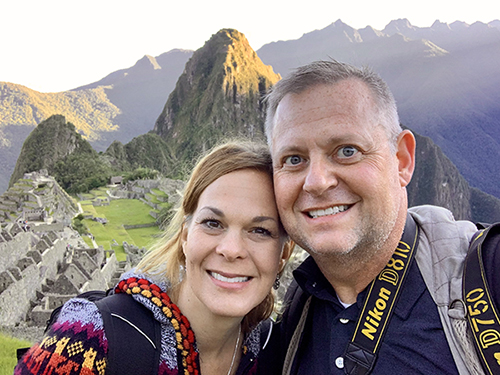

About Me

Robert Boyd
Hello everyone! My name is Robert Boyd. I live in Spring, Texas with my wife and the 2 youngest of our five children, the rest are in college or employed. I am working towards a Bachelor's of Professional Studies Degree. I am a photographic artist with a focus on architecture and inspirational art.
One of my hobbies is collecting and fixing tube radios from the 1920's and 30's. Schematics for these old radios are sometimes hard to find, and so restoring them to working condition is always a challenge. Recently I've taken up 3D printing, and I have really enjoyed learning a new technology.
Someday I would like to teach photography and art, but I never finished getting my degree, so I've decide to come back to finish school as well as learn some of the newer media skills.